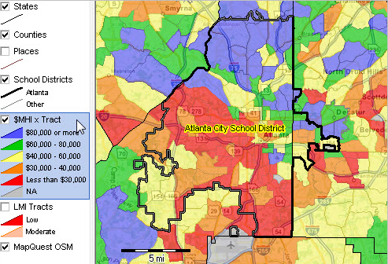
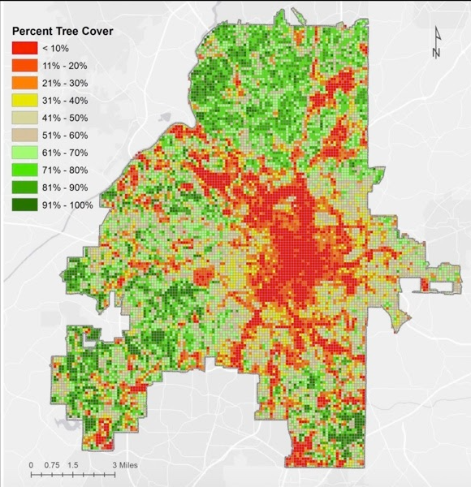

Overview
The Environmental Protection Agency defines environmental justice as, “the fair treatment and meaningful involvement of all people regardless of race, color, national origin, or income, with respect to the
development, implementation, and enforcement of environmental laws, regulations, and policies.” In an ideal setting, environmental justice seems like a basic human right. People should have the right to live
in a clean and non-hazardous environment. However, environmental injustice is rampant and is caused by unequal distribution of wealth and resources, location, and environmental racism. These factors influence
how environmental policies are made and mandated throughout communities. As a result, a paradigm is formed in which the group in power (subconscious or not) favors their own populations over others.
This is the cause of many of the environmental injustices seen in small communities across the nation.
History / Origins of Environmental Justice
The environmental justice movement was started by people of color to address the environmental protection disparities within their communities.
Martin Luther King Jr., leader of the Civil Rights Movement, kicked off the Environmental Justice movement in 1968 when he visited Memphis, Tennessee to give his support to the ongoing sanitation strike.
King advocated for better wages and working conditions for African American sanitation workers.
Just a couple of months later, King would be assassinated in that very town. Some time would pass before another event crucial to the environmental justice movement would occur.
In 1982, protests sprung up against the polychlorinated biphenyl (PCB) landfill that was to be constructed within a predominantly African American community.
These protests prompted the U.S. General Accounting Office to conduct a study that would ultimately verify the existence of environmental racism through empirical evidence.
Ever since then, the issue of environmental justice rose from the communal level to the national level. In the decades following the GAO study, hundreds of more studies would be conducted,
and special interest groups such as West Harlem Environmental Action and the Indigenous Environmental Network would form around the environmental justice movement.
In 2010, The EPA established environmental justice as an agency-wide priority and is working to demonstrate significant progress toward environmental challenges by 2020.
Environmentalism vs Environmental Justice
Given their similar naming, environmentalism and environmental justice share a lot of similar qualities, particularly dealing with the condition of our environment.
Simply put, environmental justice combines social justice with environmentalism. An environmentalist considers the wellbeing of the environment, but adding social
justice to the mix makes the environmentalist consider how environmental woes affect impoverished communities. These communities, particularly consisting of minority groups,
have historically lived closer to sources of pollution due to the prevailing economic disparities between people of color and whites.
Adding to this the upcoming threat of climate change, environmental justice is necessary to protect groups of people that are significantly more exposed to environmental threats.
Environmentalism acknowledges the problems that our planet faces and aims to solve them, but environmental justice takes environmentalism one step further by considering how
environmental issues are simultaneously social issues for which certain groups are disproportionately affected.
Social Effects of Environmental Justice
The color of a person's skin changes what environment they must experience throughout their lives. It influences whether they get to breath clean air or not. It influences the amount of trees
in their area. As unrelated as the color of a person's skin sounds to all these things, they are all true, and we can see evidence of this on this
website,
which shows how environmentally safe areas are paired with descriptions of the area. There are many factors that take part into determining the environmental problems you
will have to face during your life, including Wealth / Location, Race, and Industry. If this seems unjust to you, it is becuase it is. Everyone deserves the same right to breathe clean air and
the goal is for that idea to become reality.
Wealth and Location
People and communities with lower social-economic status (SES) are more commonly exposed to harmful air pollutants such as particulate matter (PM), NOx, and SO2. It is not a coincidence that lower
SES individuals are exposed to these things because these pollutants are the typical products of industrial emissions and for decades poor zoning laws have allowed industry to pollute right next
to lower SES communities. Though Atlanta has earned the nickname “the City in a forest” for its relatively dense tree population as compared to other major cities, the underlying truth is that tree
density has a strong positive correlation with income. Compare the map of the Atlanta city school district by color-coded by annual income and the map of tree cover, and one can see that the red areas
(displaying low income and low tree cover) line up fairly well. This observation taints Atlanta’s otherwise positive nickname because it reveals that the benefits that Atlanta’s tree cover provides are
not shared by all Atlantans. Environmental justice is a matter of recognizing that the solution to pollution must target areas that are at the source of pollution.


Looking at these images (and the link to the maps above the Wealth and Location section), it is clear that race and wealth are directly correlated to the number of trees in the area.
The red sections are around the same areas in both graphs while the wealthier people are usually in the green sections for the tree cover image. Something must be done to balance the scales between these
two groups since after all, we are all human and deserve to live in an environmentally safe area.
Race
Race is a hallmark of environmental justice that has paralleled civil rights at both a federal and community level since the 60’s. It plays a major role in when politicians decide where landfills,
incinerators, and other similar sites are built as well as how environmental policies are mandated. Numerous studies provide evidence that race is the leading factor in environmental decision
making when officials must decide who will benefit and who will be put at risk. Whether that decision is subconscious or not, minority populations tend to be the groups put at risk. To combat
this environmental inequality, the government commissioned the environmental protection agency to handle civil matters regarding environmental standards. Despite this effort, African Americans
and Latino communities, especially those in less affluent areas, do not see the same level of protection and consideration given to White communities. An example of this inequity can be seen in
Los Angeles where more than 71 percent of African Americans and 50 percent of Latinos live in the regions with the most polluted air. At the same time, only 34 percent of Whites live in similarly
polluted areas. This is where the concept of environmental racism becomes apparent in our society. Environmental racism is “any policy, practice, or directive that differentially affects or
disadvantages (whether intended or unintended) individuals, groups, or communities based on race or color” (Bullard 2001). This is a clear issue as it impacts the majority of the nation, however,
the negative effects of environmental policies on stratified groups continues to go unnoticed, to be disregarded, and to stay unchanged. Policy makers should not be deciding who should gain and
who should lose, but rather how all the communities can benefit and share the burden equally.
Industry
The industrial sector is vital to people across the globe. It is responsible for the production and distribution of an immeasurable amount of goods and without it, societal growth would come to
a near standstill. However, industry is also responsible for the depreciation of clean and natural landscapes which pollutes the environment and puts people at risk. The environment and industry
are not compatible, and industry is growing faster than the environment can handle. As with other animals, people are put at risk when industrial sites are built near communities. This often leads
to air being filled with dangerous chemicals, water becoming undrinkable, and waste spreading throughout the community. The problem is only exacerbated by the fact that most industrial sites are
built in regions with a higher population of Black or Latino people which concentrates the pollution to these areas. The policies currently in place are ineffective when it comes to protecting
these groups from the negative affects of industrialization and more protection needs to be given to citizens in order to protect them from these pollutants.